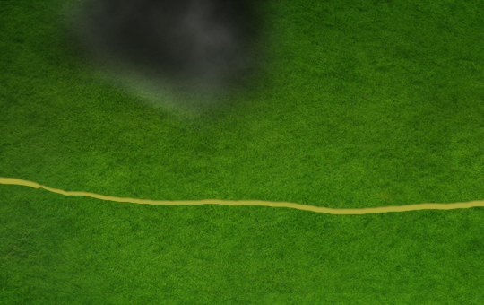

Это цикл статей, посвященный контенту в Северных землях – как пройти, что там есть, что, вероятно, будет и т.д.
Северные земли – контент для высокоуровневых персонажей, прошедших Шпиль Черной башни и Затерянную долину (по сюжетной линии игры), включающий новых монстров и особую механику переохлаждения от перемещения и от особых навыков монстров в бою.
- Как попасть в Северные земли. Снежная башня
- Особенности Северных земель. Локации и механики
- Разломы
- Квест Кровь на снегу.
- Квест Короткое замыкание
Как попасть в Северные земли. Снежная башня
Для прохода в Северные земли, аватарам придется пройти 11 этажей Снежной башни (-24, 71) – высокоуровневое подземелье с механикой переохлаждения.
На 11 этаже Снежной башни игрок активирует кнопку, открывающую прямой телепорт с 1 этажа Снежной башни на 11 этаж. Таким образом, для открытия короткого перехода в Северные земли, достаточно единожды полностью пройти Снежную башню.
Основные характеристики Снежной башни
- Является подземельем – важно для Следопытов и Рейдеров.
- На 1-10 этажах включительно действуют Кристаллы спасения. На 11 этаже кристалл спасения не действует.
- Можно ходить в отряде.
- Есть переохлаждение.
- Все сундуки в Снежной башне обновляются с каждым новым входом в это подземелье.
- Размер каждого этажа 30×30
- В Снежной башне есть особые монстры – Баньши, Ледяные охотники и Архилич (описание ниже).
- На перекрестках в Снежной башне можно наткнуться на Сферы холода (описание ниже).
- Ссылка на карту.
Переохлаждение в Снежной башне
При перемещении по Снежной башне и от навыков/заклинаний некоторых монстров внутри аватар получает переохлаждение – эффект, снижающий все параметры игрока (от здоровья и маны до Заклинателя, Призывателя и количества ярости в начале боя).
Если охлаждение аватара достигнет предельно низкого значения (95%+), игрок отправляется на Центральную площадь (кристалл спасения в данном случае не помогает).
Для нейтрализации переохлаждения игроку необходимо сжигать бревна или искристый уголь:
- Этаж 1:
- 3 бревна на полный согрев
- 1 уголь на полный согрев
- Этажи 2-11:
- 10 бревен на согрев
- 3 угля на согрев
В зависимости от того, как часто игрок будет греться, изменяются требования к изначальному количеству бревен/угля на поход – чем сильнее персонажи в походе, тем больше переохлаждения они могут себе позволить, тем меньше расходников будет потрачено на согрев.
Бревна для согрева можно купить на Рынке Больших комаров или нарубить самостоятельно, но одно бревно имеет массу 310 игровых единиц, что очень много для большинства игроков (особенно магов), поэтому имеет смысл собирать более эффективный ресурс для согрева – Искристый уголь.
Искристый уголь. Где собирать
Для сбора Искристого угля, аватару необходимо иметь при себе включенный Старый шахтерский фонарь. Сам уголь падает в Шахте призраков и Шахте кобольдов с шансом 1% за каждый этаж (на 20 этаже 20% шанс) при условии наличия включенного Старого шахтерского фонаря.
Масса 1 искристого угля – 16 игровых единиц. Наличие большой пачки искристого угля на прохождение Снежной башни позволяет не вкачивать мастера Грузоподъемности в ущерб другим, более важным с точки зрения силы персонажа, навыкам.
Старый шахтерский фонарь находится в юго-западном углу 1 этажа Снежной башни. После того, как вы получите фонарь, его необходимо научиться использовать – с этим поможет Хали Хитрец (6, -11), отправляемся к нему и показываем фонарь. Он объяснит, что это за штука и после разговора в инвентаре появится кнопка активации фонаря.
Активированный фонарь немного снижает вероятность найти основные ресурсы в шахте Призраков и Кобольдов!
Монстры в Снежной башне.
С каждым этажом сила монстров в Снежной башне растет.
Из нового бестиария Северных земель в Снежной башне обитают:
- Баньши.
- Маг стихии
- Ледяная смерть
- Щит ветра
- Маг разума
- Ожог пустоты
- Великое помешательство
- Опустошение разума
- Активный эффект Договор со смертью
- Имеет отражение боли
- Может использовать Леденящий вопль, увеличивающий ОД на действие всех врагов на 6 единиц и увеличивающих переохлаждение на 1.
- Маг стихии
- Ледяные охотники.
- Может призвать Лавину на 2-3 ряд. Лавина наносит огромный периодический урон по всем целям, находящимся в выбранном Охотником ряду.
- Использует навык Ледяная хватка – притягивает к себе цель вражескую цель со 2-3 ряда, увеличивает переохлаждение на 1.
- Архилич.
- Босс 11 этажа
- Маг тьмы
- Призыв Трупоеда
- Призыв Вечного привратника
- Маг разума
- Имеет отражение боли
- Активный эффект Договор со смертью
Из старых монстров:
- Скелеты-лучники
- Вампиры-лорды
- Тень смерти
- Тень забвения
- Жрец тени
Сферы холода в Снежной башне.
На 2-10 этажах аватару на пути может встретиться Сфера холода.
- Располагается Сфера в случайном порядке на перекрестках.
- Если аватары идут в отряде, то сфера является общей для всех участников группы (то есть если Наемник видит перед собой сферу, значит эта сфера есть и у других игроков в данной точке в отряде)
- Активация Сферы не убирает её с клетки – если пройти через Сферу и вернуться обратно, то Сфера окажется на том же самом месте и может быть активирована еще раз.
- Если сделать шаг в любую сторону (кроме как назад) при выпавшей Сфере холода, сработает один из нескольких эффектов:
- Аватар/Все в отряде получат охлаждение 90 (если на аватара нападут монстры, то 90% охлаждения применятся после окончания боя)
- Часть вещей на участниках похода сломаются на 1 единицу.
- На аватаров нападут усиленные монстры
Почти всегда Сферы можно обойти и не рисковать встретиться с усиленной пачкой монстров или потратить лишний уголь/бревна на согрев.
Сундуки Снежной башни.
Сундуки Снежной башни заслуживают особого внимания – они содержат руны 1-3 типа, древние вещи и другие редкие ресурсы.
Рассмотрим дроп сундуков по этажам (сундуки расположены в юго-западном и в северо-восточном углах этажей 1-10)
- Этаж 1:
- Юго-Запад: Старый шахтерский фонарь. После его обнаружения в данном месте будет пусто каждый заход в подземелье.
- Северо-Восток: портал на 11 этаж (активируется на 11 этаже)
- Этаж 2:
- Юго-Запад: неизвестно
- Северо-Восток: серебро
- Этаж 3:
- Юго-Запад: зелья ярости ~x14
- Северо-Восток: Волшебный снежок ~x5
- Этаж 4:
- Юго-Запад: Искристый уголь ~x5
- Северо-Восток: Эликсиры Наступление, Разрушения, Призыва
- Этаж 5:
- Юго-Запад: неизвестно
- Северо-Восток: случайная руна 1 типа
- Этаж 6:
- Юго-Запад: Искристый уголь ~x8
- Северо-Восток: Случайная древняя вещь
- Этаж 7:
- Юго-Запад: Серебро ~1100
- Северо-Восток: случайная руна 2 типа
- Этаж 8:
- Юго-Запад: Эликсиры великой чистоты/зачарования
- Северо-Восток: Волшебная сосулька и Волшебная ледышка
- Этаж 9:
- Юго-Запад: Искристый уголь ~x12
- Северо-Восток: Случайная древняя вещь
- Этаж 10:
- Юго-Запад: Титанитовая заготовка
- Северо-Восток: случайная руна 3 типа
Итого, за полное прохождение Снежной башни можно получить на 1 аватара: по 1 руне каждого типа, ~2000 серебра, ~25 искристого угля, титанитовую заготовку (вероятно нужна для крафта Северных сетов), 2 древние вещи, различные зелья, эликсиры и расходники из волшебного магазинчика. Если вести 5 аватаров, то дроп, соответственно, в 5 раз больше.
Напомню – дроп в сундуках обновляется каждый раз при входе в подземелье.
Последний (11) этаж Снежной башни
На данном этаже не работают Кристаллы спасения, не нападают обычные монстры, но есть босс-архилич. Аватарам необходимо победить его, чтобы пройти до кнопки активации портала короткого пути с 1 на 11 этаж и кнопки активации портала перехода в Северные земли на 11 этаже.
Перед нападением Архилича система напишет предупреждение в приват аватару.
Мы разобрались, как пройти в Северные земли, какой дроп в сундуках в Снежной башне, какие монстры и механики будут преследовать игроков при прохождении данного подземелья. В следующей статье мы разберем локации Северных земель – что там есть, куда пойти, что можно купить и т.д.
Благодарю Антероса за помощь в написании статьи!